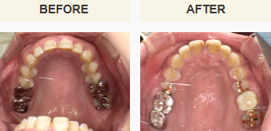
骨造成・歯肉形成 症例上顎奥歯が割れた｜ソケットリフト・GBR・APF症例
「左上の歯が割れて痛い」とご来院。抜歯後、ソケットリフトとGBR（骨造成術）で骨を増やしてインプラントを埋入。その後APF（歯肉形成術）で清掃しやすい環境を整えました。
費用：777,700円（税込）
治療期間：13ヶ月
リスク・副作用：術後の痛み・腫れ、治療期間の延長、感染・壊死、歯肉退縮等のリスクがあります。
お気軽にご相談ください
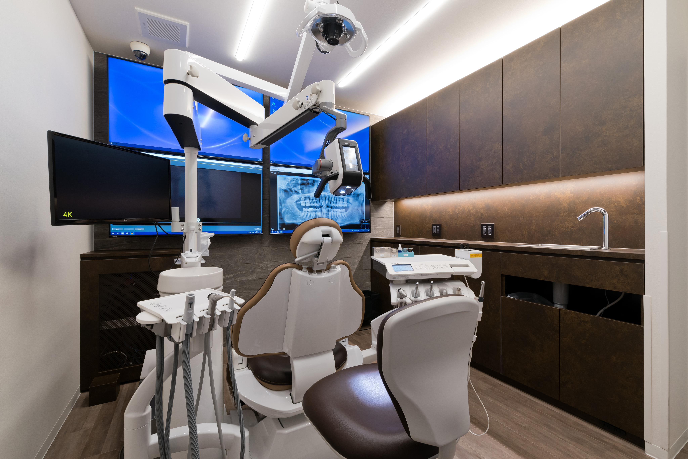
「骨が薄い」「自分には無理」と諦める前に。
なかむら歯科クリニックが提供する、基礎から創るインプラント。
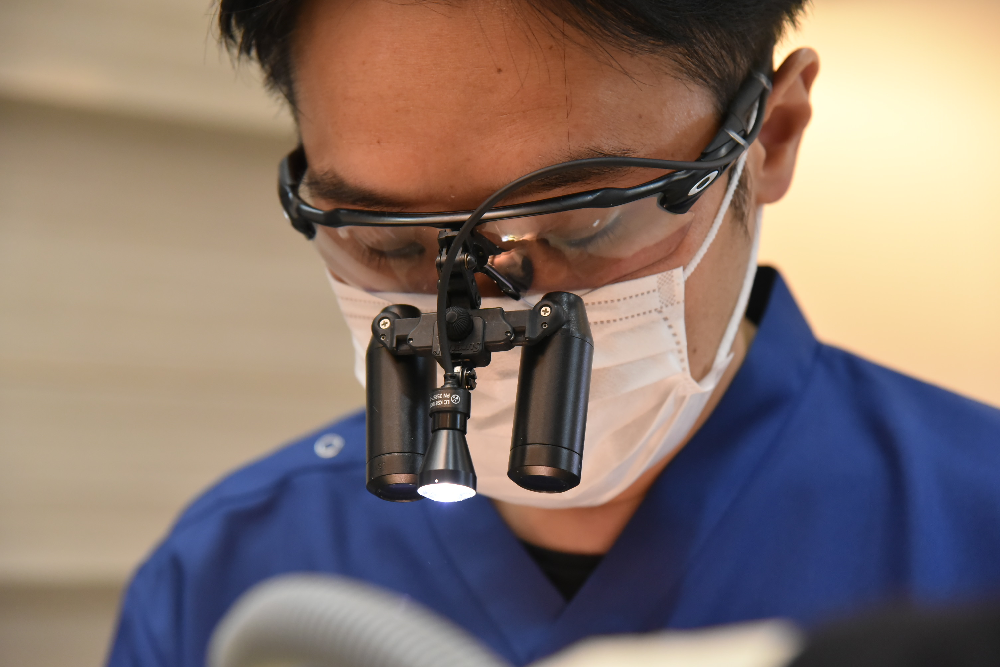
当院は「患者様に寄り添う」という抽象的な理念だけでなく、初診時に口腔内写真やCTを用いて現在の状態を客観的にお見せします。
複数の治療方法がある場合は、それぞれのメリット・デメリットを明確に説明したうえで、
患者様ご自身に選択していただく「説明と納得を重視する医療」を提供しています。
1本ごとの長期的予知性を第一に考え、無理な手術は行わず、残存歯を守るための土台作り（骨造成・歯肉形成）から丁寧に行います。
失った歯を取り戻す、第2の永久歯とも呼ばれるインプラントの基本を図解します。
インプラントとは、歯のない部分のあごの骨にチタンのネジを入れて人口の歯の根を作り、その上に人口の歯を装着するという治療法で、「支柱・土台・人工歯」の3つのパーツで支え合う構造になっています。
インプラントの支柱となるフィクスチャー（ネジ）は顎の骨に直接埋め込むため、当院では事前にCT画像を用いて骨の厚みや神経の位置を正確に確認し、最適な埋入位置を判断して安全に土台を作ります。
人工歯の部分である被せ物です。天然歯と同等の審美性と耐久性を持ち、患者様のご希望に合わせてセラミックやジルコニア等、さまざまな歯科素材を使用できます。
フィクスチャー（人工歯根）とクラウン（人工歯）をつなぐ重要な連結部分です。噛む力を分散させ、上部構造をしっかりと安定させる役割を持ちます。
人工歯根またはインプラント体と呼ばれる土台部分です。顎の骨にあけた穴に埋め込むもので、主に生体親和性が高く骨と結合しやすいチタン製で作られています。
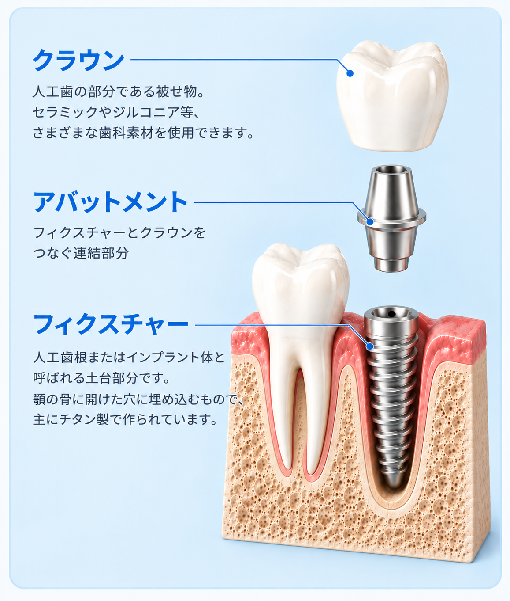
ご自身のライフスタイルやお口の状態に合わせて、最適な治療法を見つけるための比較です。
顎の骨に直接人工歯根を埋め込むため、独立して噛む力を支えやすく、隣の健康な歯を削らずに済みます。天然歯に近い強い噛み心地と審美性が得られますが、外科手術が必要であり、事前の骨量の確認や、術後の清掃・定期的なメンテナンスが必須となります。
失った歯の両隣の歯を削って土台（支台歯）とし、連なった人工歯を橋渡しのように固定する治療法です。固定式で違和感が少ない一方、健康な歯を削る必要があり、削った歯や支えとなる歯への負担が将来的なリスクとなる点を考慮する必要があります。
取り外し式の義歯で、広範囲の欠損にも対応でき、外科手術を避けやすいのが特徴です。一方で、装着時の違和感、固定するための金属のバネによる見た目の問題や周囲の歯への負担、噛む力の低下、そして定期的な調整が必要である点を確認しておく必要があります。
| 比較項目 | インプラント | ブリッジ | 入れ歯 |
|---|---|---|---|
| 噛み心地・噛む力 |
◎ 天然歯とほぼ同等
独立して支えるため、硬いものでもしっかり噛める。
|
〇 天然歯の約7～8割
固定式のため安定しているが、支えの歯への負担がある。
|
△ 天然歯の約2～5割
粘膜で支えるため力が弱く、硬いものが食べにくいことがある。
|
| 周囲の歯への負担 |
◎ 負担なし
自立しているため、周囲の健康な歯を削る必要がない。
|
× 負担が大きい
両隣の健康な歯を大きく削る必要があり、その歯の寿命を縮めるリスクがある。
|
△ やや負担あり
部分入れ歯の場合、バネをかける健康な歯に負担がかかる。
|
| 外科手術の有無 |
△ 必要
顎の骨に人工歯根を埋め込むための手術が必要。（当院はサージカルガイドで安全性向上）
|
〇 不要
手術は不要だが、歯を削る処置（麻酔等）が必要。
|
〇 不要
型取りなどが中心で、外科的な手術は必要ない。
|
| 審美性（見た目） |
◎ 非常に自然
天然歯とほとんど見分けがつかず、歯ぐきのラインも自然に作れる。
|
〇 自然（素材による）
保険適用の部位によっては金属が見える。自費のセラミック等なら自然。
|
△ 金属が見えることあり
部分入れ歯は金属のバネが見えることがある（自費でバネなしも可能）。
|
| お手入れ方法 |
〇 天然歯と同じ
通常の歯みがきとフロス。ただし、歯科医院での定期的なメンテナンスが必須。
|
△ 汚れが溜まりやすい
ダミーの歯の下など、特殊なフロス等を用いた丁寧な清掃が必要。
|
△ 毎食後の着脱・洗浄
取り外して専用のブラシや洗浄剤で洗う手間がかかる。
|
「1本くらい無くても噛めるから」という油断が、お口全体のバランスを崩壊させてしまいます。
放置することで、将来的にインプラントなどの治療すら難しくなる可能性があります。
隙間を埋めようと両隣の歯が倒れ込み、全体のお口のバランスが崩壊します。
噛み合う相手を失った上下の歯が伸び出し、噛み合わせに深刻なズレが生じます。
噛む刺激が伝わらなくなることで骨が吸収され、将来的な治療が難しくなります。
歯並びが乱れることで磨き残しが増え、残っている健康な歯まで寿命を縮めます。
片噛みの癖がついて顔が歪んだり、うまく噛めず胃腸への負担や口元の老け見えに繋がります。
専門的な技術と徹底した安全管理で、患者様のお口の未来を守ります。
当院は「OSSTEM IMPLANT 臨床研究歯科医院」として認定されています。単一メーカーの優れたシステムに特化することで、器具や手技に対するスタッフ全員の習熟度を極限まで高め、高品質で予知性の高い治療を提供できる環境を整えています。
「骨が薄い」と断られた方もご相談ください。当院ではインプラントを支える土台となる「骨」を増やす骨造成（GBR等）や、バリアとなる「歯肉」を整える歯肉形成術（CTG/FGG等）に対応。無理なく長期間安定する土台作りから根本的に行います。
初診時の3D-CT検査で骨幅・骨質・神経位置を数値化し、お口の状態を正確に把握します。事前シミュレーション通りにドリルを誘導する「サージカルガイド」を全例で使用し、人為的誤差のない安全な埋入を行います。
手術を成功させるための大前提として徹底した滅菌管理を整備。また、手術プロセスの写真・動画記録を徹底して残し、術前・術後の状態を透明性高く共有します。何が行われたかを明確にすることで、患者様の安心と当院の技術向上に繋げています。
当院の具体的な治療体制のダイジェストです。
| 認定・実績 | OSSTEM IMPLANT 臨床研究歯科医院（2022年認定） |
|---|---|
| 採用メーカー | OSSTEM社製（世界シェア上位システムに特化） |
| 対応難症例 | 骨造成（GBR等）、歯肉形成術（CTG/FGG等）による土台再建 |
| 安全対策 | 歯科用CT 3D診断、全例サージカルガイド使用、徹底した滅菌管理 |
| あえて行わない治療方針 | 残存歯の保護と1本ごとの長期的な安全性を第一に考えるため、All-on-4やザイゴマなどの即時多本数・特殊手術は行いません。 |
いきなり手術を行うのではなく、お口全体の環境を整えてから安全にインプラント治療を進めます。
むし歯、歯周病などの検査と、パノラマレントゲンによる顎骨の診査を行います。さらにインプラントをより詳しく診断するために、CT（Computed Tomography・コンピューター断層写真撮影）を実施。コンピューター上で3次元的（立体的）に精密検査を行い、手術計画を練っていきます。
いきなり手術を行うのではなく、お口全体のむし歯や歯周病治療・クリーニングを徹底。お口の中の細菌数を減らし、雑菌感染のリスクを極限まで下げてから安全にオペへ臨みます。
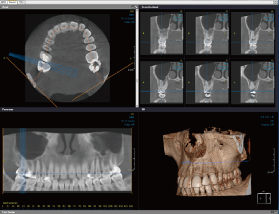
フィクスチャーと呼ばれるチタン製の人工歯根を顎骨に埋める手術を行います。局所麻酔に加えて静脈内鎮静法も行う事が可能なので、痛みと処置中のつらさは最小限で済みます。
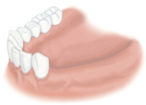
術前、歯がありません。
麻酔をして歯肉を切開します。
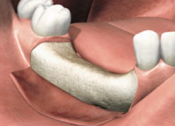
あごの骨を露出させます。
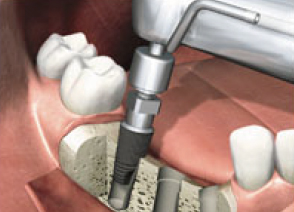
フィクスチャーを顎の骨に埋めたら縫って終了です。
一次手術の2～4か月後に、フィクスチャーが顎骨と結合しているかどうかを確認し、ヒーリングアバットメントと呼ばれるものを装着します。この状態で約1か月、歯肉の治癒を待ちます。
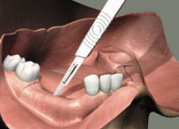
麻酔をし、一次手術で埋めたフィクスチャーへ。
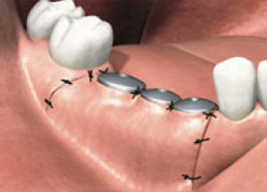
ヒーリングアバットメントを装着して縫って終了します。
歯肉が治癒した後、インプラントセラミックの人工歯（上部構造）を装着して治療は完了となります。
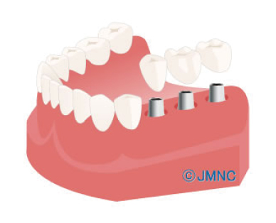
装着後、経過に問題がないか、きちんと歯磨きができているかをチェックします。インプラント周囲炎を防ぎ長持ちさせるため、定期検診を継続します。
インプラント治療における具体的なご不安に対して回答いたします。
さらに詳しい症状・お悩み別の解説はこちら
具体的な治療実績と、インプラントに関する詳細情報をご案内します。

骨造成・歯肉形成 症例「左上の歯が割れて痛い」とご来院。抜歯後、ソケットリフトとGBR（骨造成術）で骨を増やしてインプラントを埋入。その後APF（歯肉形成術）で清掃しやすい環境を整えました。
費用：777,700円（税込）
治療期間：13ヶ月
リスク・副作用：術後の痛み・腫れ、治療期間の延長、感染・壊死、歯肉退縮等のリスクがあります。
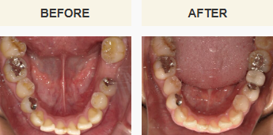
骨造成・歯肉形成 症例「左下の奥歯に歯がなくて咬みづらい」とご来院。欠損部にGBR（骨造成術）とインプラント埋入を同時実施。後にAPF（歯肉形成術）を行い、長期安定性に配慮した治療を完了しました。
費用：693,000円（税込）
治療期間：1年4ヶ月
リスク・副作用：術後の痛み・腫れ、治療期間の延長、感染・壊死、歯肉退縮等のリスクがあります。
当院のインプラント治療実績を見る
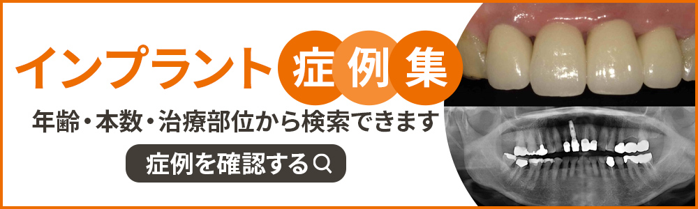
「自分のあごの骨でインプラントができるか知りたい」「他院で断られて悩んでいる」など、
まずは当院の精密診断（3D-CT）とご相談をご利用ください。